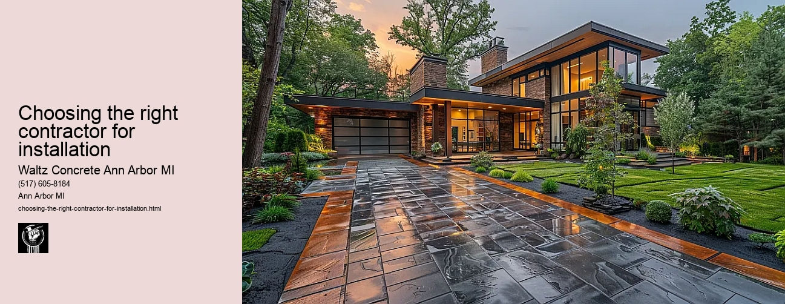

News
Concrete Driveway Installation Ann Arbor Mi
Concrete Driveway Installation Ann Arbor Mi
Choosing the right contractor for installation
Cost of concrete driveway installation in Ann Arbor
Permit requirements for driveway installation in Ann Arbor
The process and timeline of concrete driveway installation
Different types of concrete used in driveways
Maintenance and Repair of Concrete Driveways in Ann Arbor Mi
Maintenance and Repair of Concrete Driveways in Ann Arbor Mi
Preventive maintenance tips for durability
Common causes for concrete driveway damage
Professional companies offering repair services in Ann Arbor
Doityourself versus professional repairs
Costs associated with repairing a concrete driveway
Designs and Styles of Concrete Driveways in Ann Arbor Mi
Designs and Styles of Concrete Driveways in Ann Arbor Mi
Popular design trends for driveways
Considering climate factors when choosing a design or style
Unique customizations available for concrete driveways
Influence of home architecture on driveway design
Stamped stained and decorative options
Environmental Impact of Concrete Driveways in Ann Arbor Mi
Environmental Impact of Concrete Driveways in Ann Arbor Mi
Carbon footprint associated with concrete production
Use of sustainable materials in concrete driveways
Drainage considerations to reduce environmental impact
Local regulations regarding environmentally friendly driveways
Potential use of permeable or porous pavement
Alternatives to Concrete Driveways in Ann Arbor Mi
Alternatives to Concrete Driveways in Ann Arbor Mi
Asphalt driveways and their proscons
Paver stone driveways and their benefitsdrawbacks
Gravel or crushed stone as an alternative option
Comparing costs between different driveway materials
Resinbound surfaces as emerging technology
About Us
Contact Us

Choosing the right contractor for installation
Choosing the right contractor for installation
Choosing the Right Contractor for Installation: A Crucial Decision
Whether you are planning a home renovation or need to equip your office with new appliances, choosing the right contractor for installation can be daunting. It is a decision that requires careful consideration and thorough research. The success of your project significantly depends on their expertise and professionalism.
The first step in choosing a suitable contractor is understanding what you require. Are you looking for someone to install an air conditioning system, or do you need a professional kitchen remodel? Once you have established your needs, it becomes easier to narrow down potential contractors who specialize in those areas.
Once you have identified potential contractors, take time to evaluate their qualifications and experience. Check if they are licensed and insured as required by local regulations. This offers protection against any liabilities that may occur during the project. You also want to ensure they have been in business for several years, showing stability and experience in their field.
Next, look at their reputation. Read online reviews, check out testimonials on their website and seek recommendations from friends or family members who have had similar work done recently. However, keep in mind that every project is unique; what worked well for another person might not necessarily mean it will work perfectly for you.
In addition to checking references and reviews, it's essential to interview prospective contractors yourself before hiring them. Ask about their process: how do they plan projects? How do they manage unexpected challenges? What does their timeline typically look like? Their answers will give insights into how smoothly your project could go.
Always request quotes from multiple contractors before making a selection. While cost should not be the only determining factor, its crucial to make sure that the price fits within your budget without compromising on quality of service.
Remember that communication is key when working with any contractor; this starts from the initial consultation through completion of the project. Choose a contractor who listens attentively to your needs, addresses all queries promptly and keeps you informed about the progress.
Another aspect to consider is whether the contractor offers warranties or guarantees for their work. This provides assurance of their confidence in their workmanship and gives you peace of mind knowing that if anything goes wrong, they will take responsibility and resolve the issue.
Lastly, trust your instincts. You want to feel comfortable with the contractor in your home or business premises. If something doesn't feel right during your interactions, it's probably best to keep looking until you find a contractor that feels like a good fit.
In conclusion, choosing the right contractor for installation demands careful consideration. By doing thorough research, asking pertinent questions, comparing quotes and trusting your intuition, you can make an informed choice that leads to successful project completion. After all, this person or team will help transform your space into something more functional and appealing; hence its imperative that they are capable of delivering on their promise.
Concrete Driveway Installation Ann Arbor Mi
Choosing the right contractor for installation
Frequently Asked Questions
What experience does the contractor have in concrete driveway installation in Ann Arbor, MI?
The contractor should have substantial experience with similar projects, ideally in the same region due to specific environmental and regulatory considerations.
Is the contractor fully licensed and insured to operate in Ann Arbor, MI?
The contractor must be fully licensed and insured to ensure that they are operating within legal parameters and any potential damages or injuries on site can be covered.
Can the contractor provide references from previous clients for similar jobs done in Ann Arbor, MI?
Yes, a reputable contractor will be able to provide references from past clients who had similar work done. This helps you gauge their workmanship and reliability.
Does the contractor offer a warranty or guarantee on their work?
A reliable contractor should stand behind their job by offering a warranty or guarantee on their work. This protects you as a client if anything goes wrong after the project is completed.
How long will it take for the project to be completed?
Completion time may vary depending on numerous factors such as size of your driveway, weather conditions etc., but an experienced contractor should give you an estimated timeline after assessing your project.
Choosing the right contractor for installation